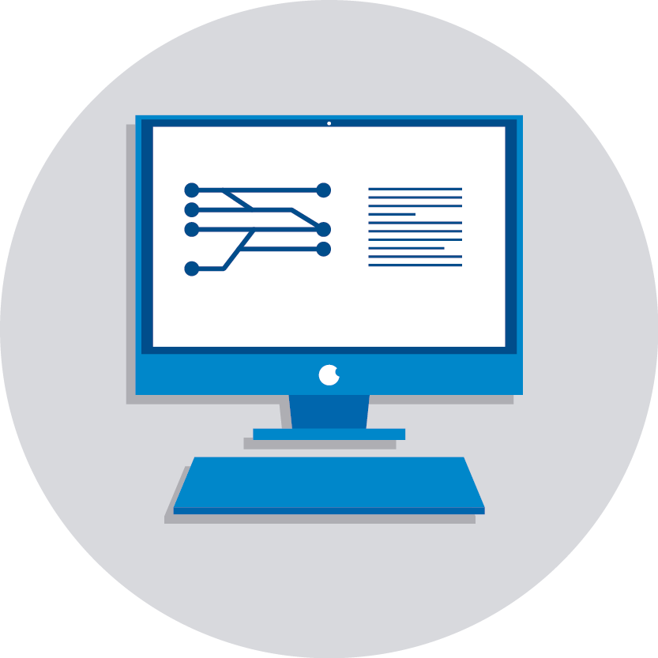
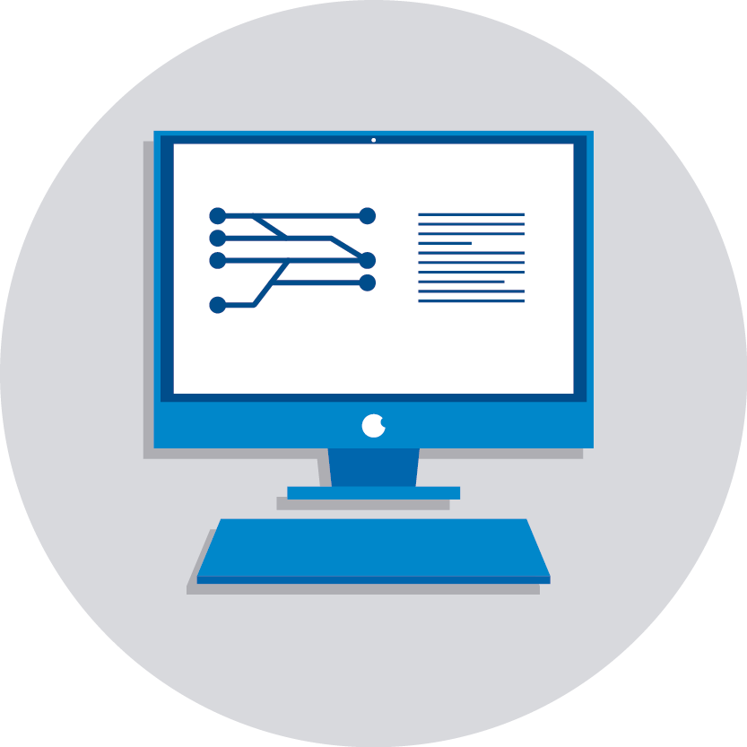

HIMPUNAN SISTEM INFORMASI |
|||
 |
|
JURUSAN SISTEM INFORMASI
Sistem Informasi adalah bidang yang menggabungkan ilmu komputer dengan bisnis dan manajemen. Di jurusan ini kamu akan belajar gimana mengidentifikasi kebutuhan dan proses bisnis perusahaan berdasarkan data-data yang dimiliki perusahan, kemudian merancang sistem yang sesuai dengan kebutuhan perusahaan. |
PROSPEK KERJAS LULUSAN
Setelah mahasiswa sudah lulus dari jurusan sistem Informasi, mahasiswa tersebut memiliki peluang atau prospek kerja yang sangat luas. Hal ini karena, seiring dengan perkembangan teknologi dan perkembangan jaman, banyak perusahaan membutuhkan pengembangan dari sistem yang efektif, fleksibel, serta efisien juga. |
Jodi Angger Wicaksono @copyright2020 |